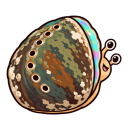

End-to-end encrypted to the model’s secure hardware.

Ask anything. It stays encrypted to the model.
Advanced
Other devices
Save a passkey or link another device. Your recovery methods open the same encrypted chats.
Link devices
On the new device, show a QR. On the existing device, scan it and compare the short code.
Compare this code on both devices before allowing access to your wallet and chats.
Email recovery
Add your email on the original browser first. Then use Recover with email here to restore the same wallet and chats.
Send recovery email ↗Send the prepared message from your own email account, then return here. Email recovery takes 48 hours; passkeys and QR links work immediately.
Move from an older origin
Wallet
Loading your wallet…
Add credit
Sandbox: $0.054 per hour, 1 minute minimum.
USDC deposits and withdrawals use Base Sepolia ETH for gas. Get free testnet ETH ↗ and USDC ↗ and send them to your wallet address above. Your starter credit needs no ETH.
Closing stops new spending. After 14 days, withdraw the remaining USDC without a broker signature.
Sandbox
Guest starts when the agent first uses a tool.
0 guest seconds
View guest attestationFiles will be saved with this conversation.
Held for this conversation and released after five idle minutes. Model tokens and guest seconds share your credit.
Verification controls
The approved policy ships with this page. Verification runs automatically before a job. Deployment pins are available for inspection.